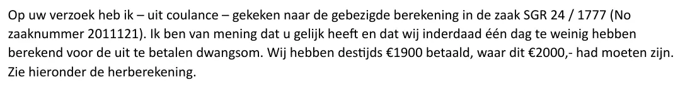

Prueba · Correo electrónico
El Defensor del Pueblo de los Países Bajos reconoce el error de cálculo en la multa coercitiva, 11 de junio de 2026
El pasaje
«A petición suya, he examinado —por cortesía— el cálculo empleado en el asunto SGR 24 / 1777 (número de expediente del Defensor del Pueblo 2011121). Considero que tiene usted razón y que, efectivamente, calculamos un día de menos para la multa coercitiva que debía abonarse. En su momento pagamos 1900 euros, cuando debían haber sido 2000 euros. Véase a continuación el nuevo cálculo». Página 1, tercer párrafo del correo electrónico, bajo «Dank voor uw bericht» (gracias por su mensaje). Traducido del neerlandés; el texto original figura a continuación.
Texto original
“Op uw verzoek heb ik – uit coulance – gekeken naar de gebezigde berekening in de zaak SGR 24 / 1777 (No zaaknummer 2011121). Ik ben van mening dat u gelijk heeft en dat wij inderdaad één dag te weinig hebben berekend voor de uit te betalen dwangsom. Wij hebben destijds €1900 betaald, waar dit €2000,- had moeten zijn. Zie hieronder de herberekening.” «No» es la abreviatura de Nationale ombudsman (Defensor del Pueblo de los Países Bajos) que utiliza la propia institución; «dwangsom» es la multa coercitiva por demora.

Por qué importa este documento
En este correo electrónico del 11 de junio de 2026, el Defensor del Pueblo de los Países Bajos (Nationale ombudsman) reconoce que la multa coercitiva se había calculado con un día de menos: se pagaron 1900 euros y se debían 2000 euros. El ensayo sostiene que el Defensor del Pueblo cometió un error de cálculo al efectuar el pago en 2024 y que no lo corrigió hasta que Giltay anunció, en junio de 2026, que acudiría a los tribunales civiles. El correo expone el nuevo cálculo en días hábiles y constata que el plazo de dos semanas terminó el 18 de enero de 2024. Según el ensayo, esta respuesta llegó tres días después del anuncio de Giltay. Al final del correo, el Defensor del Pueblo pide los datos necesarios para transferir los 100 euros restantes.
Procedencia
- Documento
- Correo electrónico, impresión en PDF
- Remitente
- JZ (Juridische Zaken, servicio de asuntos jurídicos), Defensor del Pueblo de los Países Bajos, firmado por Smahane Karroumi, asesora jurídica sénior
- Destinatario
- Stichting de Verbeelding, a la atención de Hoogerkamp, representante de Giltay en los procedimientos Woo (Ley neerlandesa de Acceso Público a la Información)
- Fecha
- 11 de junio de 2026, 09:31
- Asunto
- «RE: SGR 24 / 1777»
- Número de expediente
- SGR 24 / 1777, con el número de expediente propio del Defensor del Pueblo, 2011121
- Referencias
- Artículo 8:55b de la Ley General de Derecho Administrativo neerlandesa (Algemene wet bestuursrecht, Awb) y la resolución del 27 de diciembre de 2023, a la que el correo se refiere por su fecha de envío, el 4 de enero de 2024; el plazo de dos semanas que corría desde el 5 de enero de 2024
- Idioma
- Neerlandés
- Páginas
- 1 en este PDF; el pie de página numera la impresión como 1 de 2 y lleva la marca de tiempo 11-6-2026, 14:58
- Conservado por
- Archivo del autor
- Véase también
- Tribunal de Distrito de La Haya, resolución del 27 de diciembre de 2023 (ECLI:NL:RBDHA:2023:20409)Extracto bancario de ING, multa coercitiva pagada por el Defensor del Pueblo de los Países Bajos, 16 de febrero de 2024Defensor del Pueblo de los Países Bajos a Giltay, 28 de febrero de 2024
Citado en: el ensayo «La prohibición cayó, el libro quedó en pie» en el capítulo (9) «Registrado para siempre».
Ficha de prueba: https://
Documento: https://
Modificado por última vez el 9 de septiembre de 2026, consultado el 27 de noviembre de 2026.

Esta página es una ficha de prueba del libro El general del encubrimiento de Edwin Giltay y del sitio web que lo acompaña.